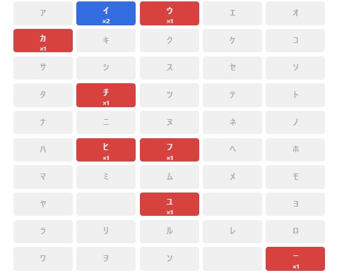

ポケシークの遊び方
ゲームの説明
ポケシークは、隠された2匹のポケモンの名前を50音表のヒントから推理して当てるゲームです。 各文字の出現数が表示されるので、それを手がかりに2匹のポケモンを導き出しましょう！
問題の例
ピカチュウ
 とイーブイ
とイーブイ がお題のとき、問題は上の画像のようになります。
「イ」が合計2回登場し、他に登場する文字は全て1回ずつであることが50音表で示されます。
濁音や小さい文字などの扱いは後述する詳しいルールをご覧ください。
がお題のとき、問題は上の画像のようになります。
「イ」が合計2回登場し、他に登場する文字は全て1回ずつであることが50音表で示されます。
濁音や小さい文字などの扱いは後述する詳しいルールをご覧ください。
出現回数とセルの色
出現回数とセルの色の関係は上の画像の通りです。 一度も登場しない文字は灰色で、出現回数が増えるごとに 赤→ 青→ 黄→ 紫→...と変化します。 5回以上出現した場合の見た目は秘密です。ゲームのモード
- デイリーチャレンジ すべてのプレイヤーが日替わりで共通のお題にチャレンジします。
- フリープレイ（全国図鑑） ランダムに選ばれたお題で遊べます。対象は全てのポケモン1025匹です。
- フリープレイ（初代のみ） ランダムに選ばれたお題で遊べます。対象は初代のポケモン151匹のみです。
詳しいルール
- 回答はすべてカタカナで、ポケモンの名前を入力してください。 名前に記号が含まれるポケモンは記号を無視して、発音の通り回答してください。
- ニドラン♂→ニドランオス
- ポリゴン2→ポリゴンツー
- ポリゴンZ→ポリゴンゼット
- タイプ：ヌル→タイプヌル
- カプ・コケコ→カプコケコ
- 50音表では、濁音・半濁音、小さい文字（ャ・ュ・ョなど）はすべて清音になります。 たとえば、ピカチュウは「ヒ」「カ」「チ」「ユ」「ウ」として50音表で表示されます。
- 50音表では、伸ばし棒（ー）はそのままになります。 たとえば、イーブイは「イ」「－」「フ」「イ」として50音表で表示されます。
- メガ進化やリージョンフォームは登場しません
ヒント機能
お題が難しい場合にヒントを見ることができます。ヒントは全部で3つあります。
- ヒント1： 1匹目のポケモンの頭文字がわかります。
- ヒント2： さらに2匹目のポケモンの頭文字がわかります。
- ヒント3： 1匹目のポケモンがわかります。
その他
クリア/ギブアップしたとき、X（ツイッター）へのシェアボタンが表示されるので、ぜひ結果をツイートしてください！
バグ報告やお問い合わせは@ktn_xxx96までお願いします。